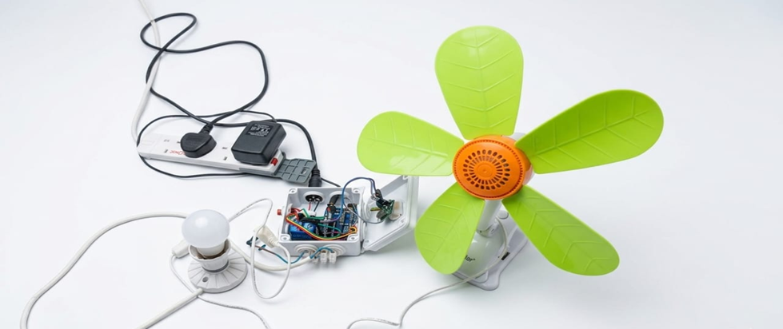
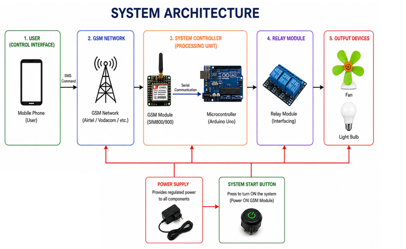
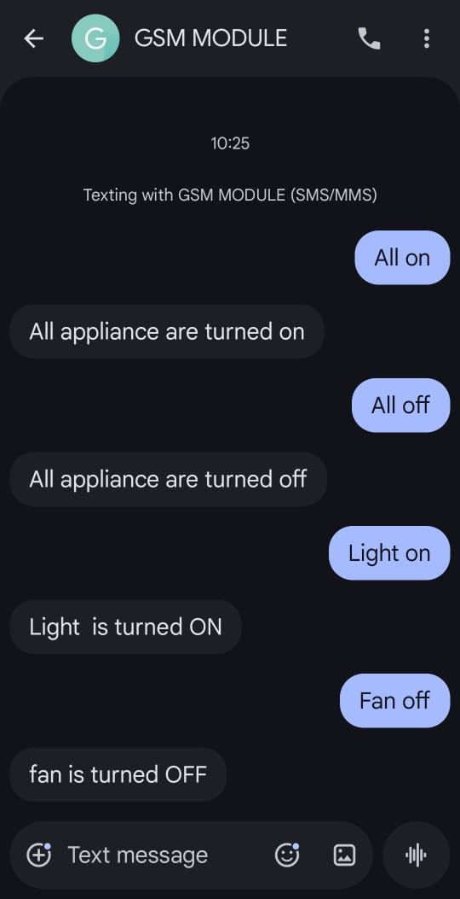
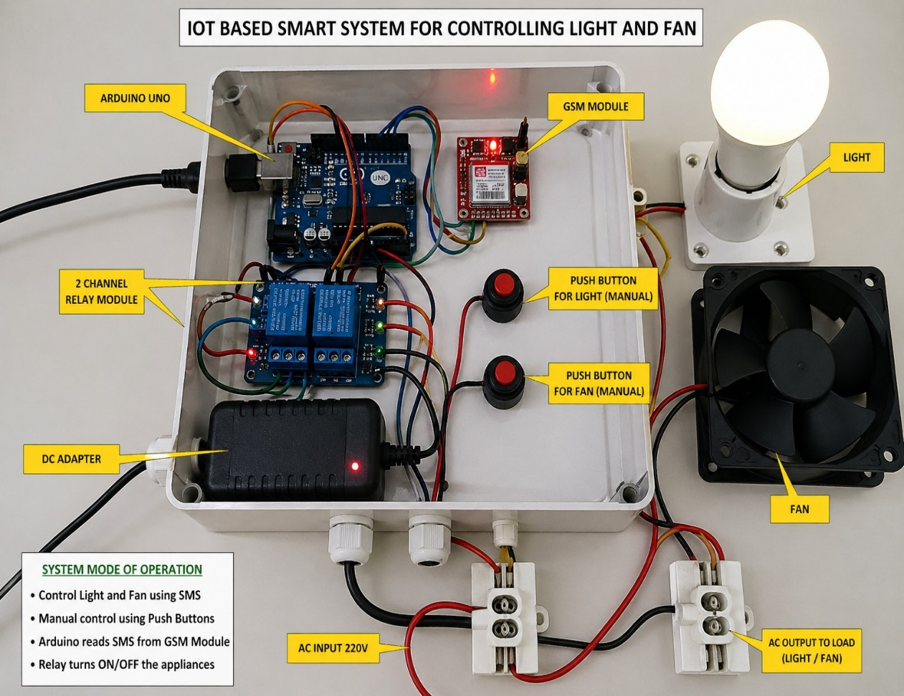
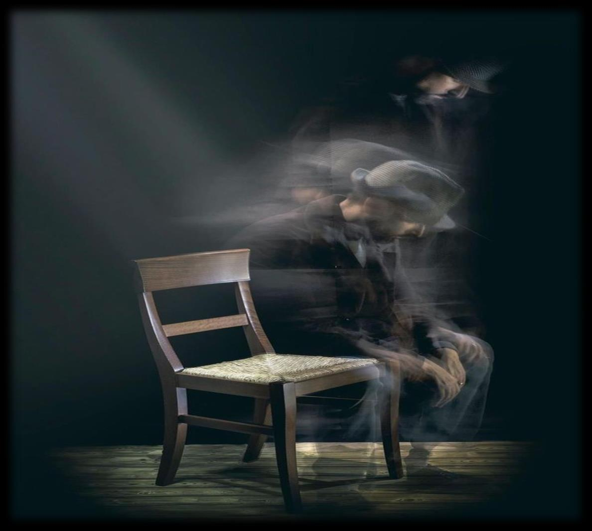
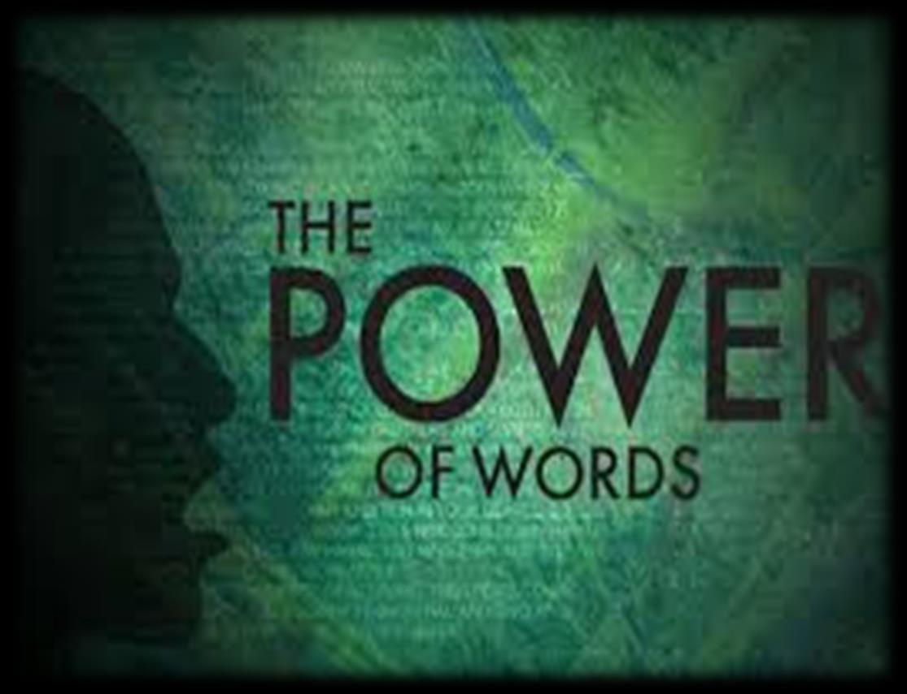

COMPUTER SCIENCE PORTFOLIO
Hello, I'm
Johnson Mwakyusa.
A Computer Science student who loves learning, solving problems, and building things that make life easier.
01 / ABOUT ME
Knowledge grows
through doing.
My name is Johnson Athanas Mwakyusa. I have completed my third year of Computer Science studies at MWECAU.
This is where I share my technology journey, the projects I have built, and what I am learning. Public projects from my GitHub are listed here automatically.
MWECAU
GitHub
02 / WHAT I'VE BUILT
My projects.
Public repositories from GitHub will appear here automatically.
Private or unpublished repositories will not appear here.
03 / FINAL-YEAR PROJECT
IoT-Based Smart System
for Controlling Light and Fan
A smart home system that controls lights and a fan using SMS commands or manual push buttons, powered by an Arduino Uno and GSM module.




04 / FEATURED BOOK
A book about finding
the courage to speak.
A SWAHILI-LANGUAGE BOOK
Mistake of Silence
(Kosa la Ukimya)
A reflective book about the cost of staying silent in the face of injustice. It explores silence and its effects on gender, young people, social development, and inner wellbeing—encouraging readers to speak with courage and choose positive change.


05 / GET IN TOUCH
Let's build
something great.
Have a question, an idea, or an opportunity to collaborate? Send me a message.
EMAILjohnsonmwakyusa8@gmail.com PHONE+255 677 855 005 WHATSAPPMessage me on WhatsApp GITHUBgithub.com/johnson10-gif